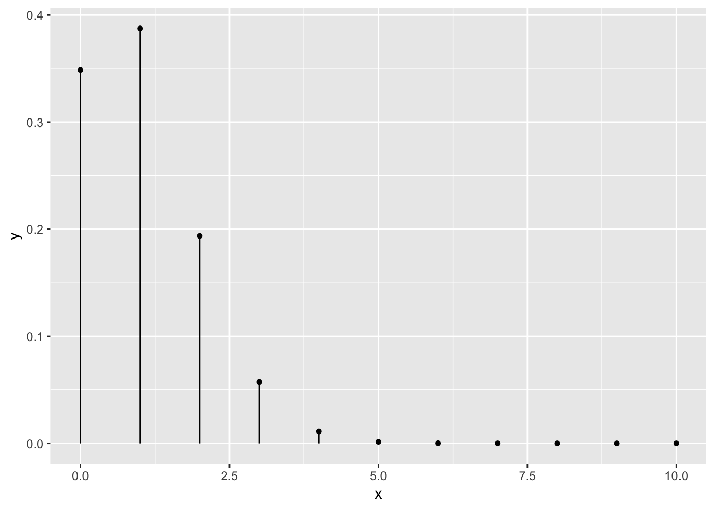
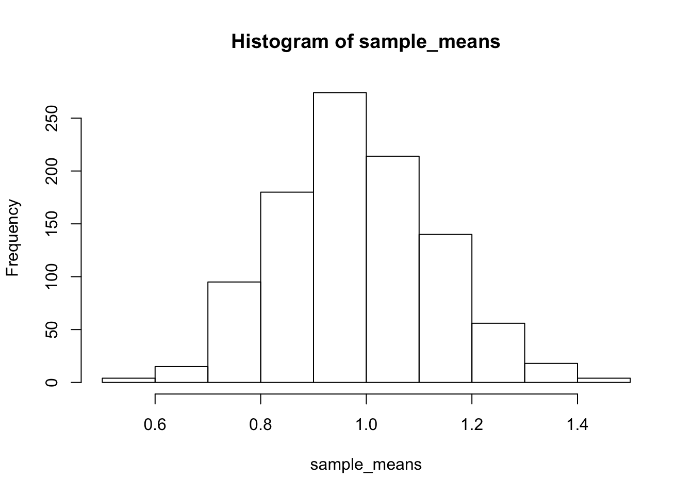
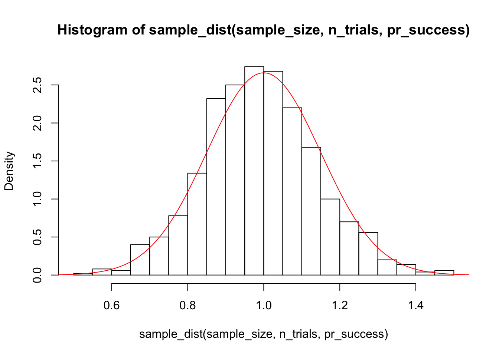

Central Limit Theorem
The Central Limit Theorem is “a key concept in probability theory because it implies that probabilistic and statistical methods that work for normal distributions can be applicable to many problems involving other types of distributions.”
Consider a right skewed distribution (e.g Binomial(10, 0.1))
n_trials <- 10
pr_success <- 0.1
x <- 0:n_trials
y <- dbinom(x, n_trials, pr_success)Now let’s visualize our results.
plot(NA, xlim = c(0, n_trials), ylim = c(0, 0.4))
invisible(sapply(1:length(x), function(i) lines(c(x[i], x[i]), c(0, y[i]))))
library(tidyverse)
tibble(x, y) %>%
ggplot(aes(x = x, y = y)) +
ggalt::geom_lollipop()
Now, let’s construct sampling distributions of the mean when samples of size 40 are drawn from this population.
sample_size <- 40
n_draws <- 1000For Loop
sample_means <- numeric(n_draws)
for (i in seq_along(sample_means)) {
sample_means[i] <- mean(rbinom(sample_size, n_trials, pr_success))
}Now, let’s investigate the resulting sample means.
hist(sample_means)
mean(sample_means)## [1] 0.995125var(sample_means)## [1] 0.02216527sapply
sample_means <- sapply(1:n_draws, function(x){
mean(rbinom(sample_size, n_trials, pr_success))
})Tidyverse
library(tidyverse)
sample_means <- rerun(n_draws, rbinom(sample_size, n_trials, pr_success)) %>%
map_dbl(mean)Write a function whose input is n, n_trials, pr_success, and n_draws which returns the mean of n_draws samples of size n from a Binomial(n_trials, pr_success) distribution. Let n_draws be 1000 by default.
sample_dist <- function(n, n_trials, pr_success, n_draws = 1000) {
replicate(n_draws, mean(rbinom(n, n_trials, pr_success)))
}demo_sample_dist <- function(n) {
hist(sample_dist(sample_size, n_trials, pr_success), breaks = 30, freq = FALSE)
x <- seq(0, 3, length = 1000)
pop_mean <- n_trials * pr_success
pop_variance <- pop_mean * (1 - pr_success) / n
lines(x, dnorm(x, pop_mean, sqrt(pop_variance)), col = "red")
}demo_sample_dist(40)
This is a manifestation of the Central Limit Theorem.